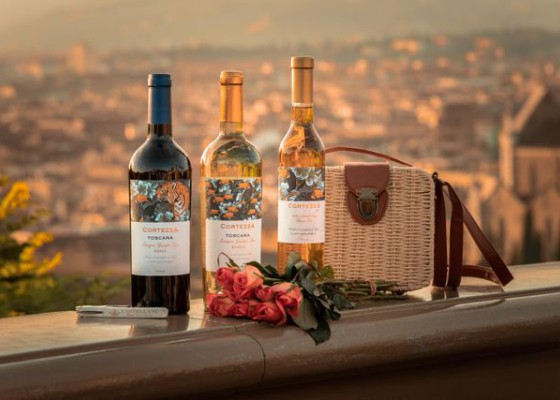

旅するワイン
昔から、整えられた場所が好きだった。
綺麗に並べられたもの。
余白のある空間。
そこにいるだけで、少し呼吸が深くなるような場所。
高級ホテルの部屋や、雰囲気のあるレストラン。
自分には少し遠い世界のように感じながらも、なぜか惹かれていた。
そこにいる時の自分が、少し好きだったからかもしれない。
普段より少し丁寧に振る舞える。
いつもより少しゆっくり時間を過ごせる。
そんな瞬間が好きだった。
ワインも、そんな憧れのひとつだった。
グラスを傾け、香りを楽しみ、語らう人たち。
どこか別世界だと思いながらも、ワインボトルが置かれた食卓の、あの特別な空気に憧れていた。
ある日、イタリアワイン講座を始めた。
素敵な趣味を持ってみたかったからだ。
その少し前、私は走ることを日常に取り入れていた。
仕事を終え、夕食を作り、音楽を聴きながら走る。
汗を流すと、気持ちが前向きになっていった。
子ども中心だった毎日の中に、自分の「やってみたい」が戻ってきた。
そんな時に届いたイタリアワインの通信講座は、まるで小さなプレゼントのようだった。
地図を広げ、知らないブドウの品種を知る。
その土地で育ったものが、今こうして目の前にある。
それだけで、一本のワインがぐっと特別になった。
ワインを選び、お気に入りのグラスを並べ、料理を少し丁寧に盛り付ける。
それだけで、何でもない日が少しだけ色づく。
食卓を眺める時間も、いつの間にか好きになっていた。
整えられた場所が好きだった私は、いつの間にか自分の手で、その場所を作るようになっていた。
少し気取っているように見えるかもしれない。
でも、その小さな演出が、毎日を楽しむきっかけになる。
日常の中に、小さな特別を置く。
ワインは、私に飲み方を教えてくれた。
それ以上に、自分が心地よいと思える時間の作り方を教えてくれたのだと思う。
旅していたのは、遠いイタリアの土地だけではなかった。
自分の好きなものを見つける旅だった。